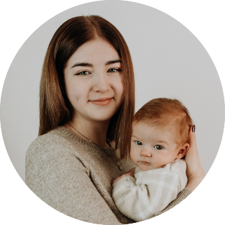

|  |
Mariam Grigorenko
Quereinsteigerin in der IT Branche. Mutter von Leevi L.💙 und Hausfrau. Ich liebe Mathematik und Fremdsprachen.
Ich bin eine Quereinsteigerin in der Branche der Softwareentwicklung und es macht mir unglaublich Spaß neue Projekte zu erschaffen und Problemlösungen zu finden.
|
Bildung und Kurse
| Jahre |
Schule/Kurse |
| 2010-2015 |
Schule Nr. 200, Belogorsk (RU) |
| 2015-2019 |
IGS Zell-Mosel (DE) |
| 2019-2021 |
IGS Magister Laukhard Rhaunen-Herrstein (DE) Die letzten 3 Zeugnisse |
| 2022 |
Udemy: The Comlete 2022 Web Development Bootcamp, Dr. Angela Yu |
Meine Fähigkeiten
| Growth-Mindset |
★★★★★ |
| Flexibilität/Resilienz |
★★★★★ |
|
| Analytisches Denken |
★★★★★ |
| Verhandlungsgeschick |
★★★☆☆ |
|
Meine Hobbys
Meine Geschichte
Ich bin am 25.05.2003 in Simferopol auf der Halbinsel Krim in der Ukraine geboren. Als ich 7 wurde, bin ich mit meiner Mutter nach Belogorsk umgezogen. Die Kleinstadt, mit 70 Tausend Einwohnern,
liegt an der Grenze mit China ganz weit in Ostrussland. Dort verbrachte ich weitere 5 Jahre meines Lebens.
Mit 12 bin ich mit meiner Mutter zu meinem Stiefvater nach Deutschland gezogen, es war sehr unerwartet, da es nicht geplant war, aber aufgrund unserer familiären Situation ging es nicht anders.
Ich konnte kein Wort Deutsch sprechen und die Einschulung war für mich nicht leicht. Aber nach einem Jahr konnte ich fast alles verstehen und nach einem weiterem Jahr auch sprechen, sodass
man mich verstehen konnte.
Nach einem Schulwechsel, aufgrund eines weiteren Umzugs mitten in der 9. Klasse, konnte ich gegen dem Schuljahresende fließend und akzentfrei Deutsch sprechen.
Ab der 10. Klasse fing mein Leben an wieder besser zu sein. Ich war sehr zielstrebig, was man anhand von meinem Zeugnis auch sehen kann. Ich habe an kleinen Adobe- und Web Development-Kursen teilgenommen und habe mich intensiv
mit der Schule beschäftigt.
Später kam ich in die 11. Klasse und mein Halbjahreszeugnis war hervorragend. Ich habe währenddessen einen Nebenjob als Verkäuferin bei dem Unternehmen Lidl ausgeübt, bis ich schwanger wurde.
Von meinem Arzt bekam ich ab Mai ein Beschäftigungsverbot und durfte nicht mehr arbeiten. Ich fühlte mich von allen verlassen und war zu schwach, um die Schule weiterzumachen, also bin ich nach der 11 gegangen.
Im September bin ich mit meinem Freund Lukas L. in eine eigene Wohnung gezogen. Und am 15. Oktober ist unser Sohn Leevi auf die Welt gekommen. Ich bin eine gute Mutter und Hausfrau geworden (wie auch immer😆).
Allerdings wollte ich nicht, dass meine Lernfähigkeiten verloren gehen, also habe ich im Januar 2022 beschlossen eine Quereinsteigerin in der IT-Branche zu werden, koste es was es wolle.
Als ich nun anfing mein Ziel zu verfolgen, kam der 9. Februar 2022. Der Tag, an dem mein Stiefvater verstorben ist. Seitdem war nichts mehr so wie vorher. Unsere Familie hat einige Monate gebraucht,
um mit der Situation klar zu kommen. Im Juli beschloss ich meinen Traum weiter zu verfolgen.
Meine Kontaktdaten